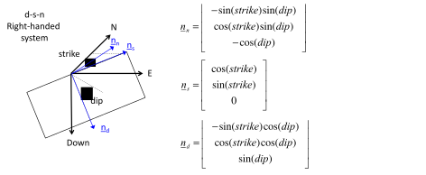
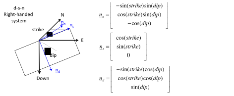

Next: Identification of tensile fractures Up: Wellbore stability Previous: Maximum horizontal stress determination Contents
Wellbore tensile (or open mode) fractures occur when the minimum principal stress  on the wellbore wall goes below the limit for tensile stress: the tensile strength.
Unconsolidated sands have no tensile strength.
Hence, an open-mode fracture occurs as soon as effective stress goes to zero.
The minimum hoop stress is located on the wall of the wellbore
on the wellbore wall goes below the limit for tensile stress: the tensile strength.
Unconsolidated sands have no tensile strength.
Hence, an open-mode fracture occurs as soon as effective stress goes to zero.
The minimum hoop stress is located on the wall of the wellbore  and at and (Fig. 6.14):
and at and (Fig. 6.14):
 |
(6.16) |
Notice that we have added a temperature term
 that takes into account wellbore cooling, an important phenomenon that contributes to tensile fractures in wellbores.
that takes into account wellbore cooling, an important phenomenon that contributes to tensile fractures in wellbores.
Matching the lowest value of hoop stress with tensile strength permits finding the mud pressure that would produce a tensile (or open mode) fracture:
and therefore
 |
(6.18) |
The subscript  of
of  corresponds to “breakdown” pressure because in some cases when
corresponds to “breakdown” pressure because in some cases when  , a mud pressure
, a mud pressure  can create a hydraulic fracture that propagates far from the wellbore and causes lost circulation.
When
can create a hydraulic fracture that propagates far from the wellbore and causes lost circulation.
When  and , the mud pressure will produce short tensile fractures around the wellbore that do not propagate far from the wellbore.
and , the mud pressure will produce short tensile fractures around the wellbore that do not propagate far from the wellbore.
In the equations above we have added the contribution of thermal stresses
where  is the linear thermal expansion coefficient and is the change in temperature (
is the linear thermal expansion coefficient and is the change in temperature (
 for
for
 ).
Wellbores are usually drilled and logged with drilling mud cooler than the formation
.
Hence, ignoring thermal stresses is conservative for preventing breakouts but it is not for tensile fractures.
).
Wellbores are usually drilled and logged with drilling mud cooler than the formation
.
Hence, ignoring thermal stresses is conservative for preventing breakouts but it is not for tensile fractures.
Fig. 6.15 shows an example of calculation of the local minimum principal stress  around a wellbore.
The locations with the lowest stress align with the direction of the far-field maximum horizontal stress in the plane perpendicular to wellbore axis.
around a wellbore.
The locations with the lowest stress align with the direction of the far-field maximum horizontal stress in the plane perpendicular to wellbore axis.
![\includegraphics[scale=0.65]{.././Figures/split/7-14.pdf}](img753.svg) |
PROBLEM 6.3: Calculate the maximum mud weight (ppg) in a vertical wellbore for avoiding drilling-induced tensile fractures in a site onshore at 7000 ft of depth where  4300 psi and 6300 psi and with hydrostatic pore pressure.
The rock mechanical properties are
4300 psi and 6300 psi and with hydrostatic pore pressure.
The rock mechanical properties are  3500 psi,
3500 psi,  0.6, and = 800 psi.
0.6, and = 800 psi.
SOLUTION
The problem variables are the same of problem 6.1.
The breakdown pressure in the absence of thermal effects is
 psi
psi psi psi psi
psi psi psi psi
psi

![\includegraphics[scale=0.65]{.././Figures/split/7-13.pdf}](img739.svg)